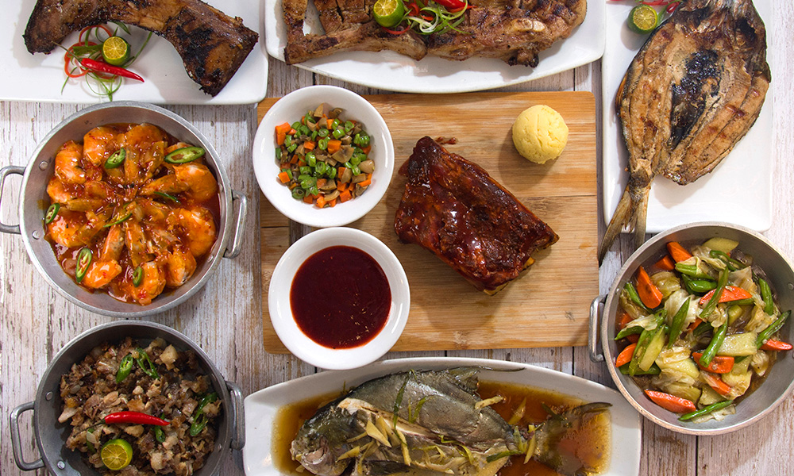
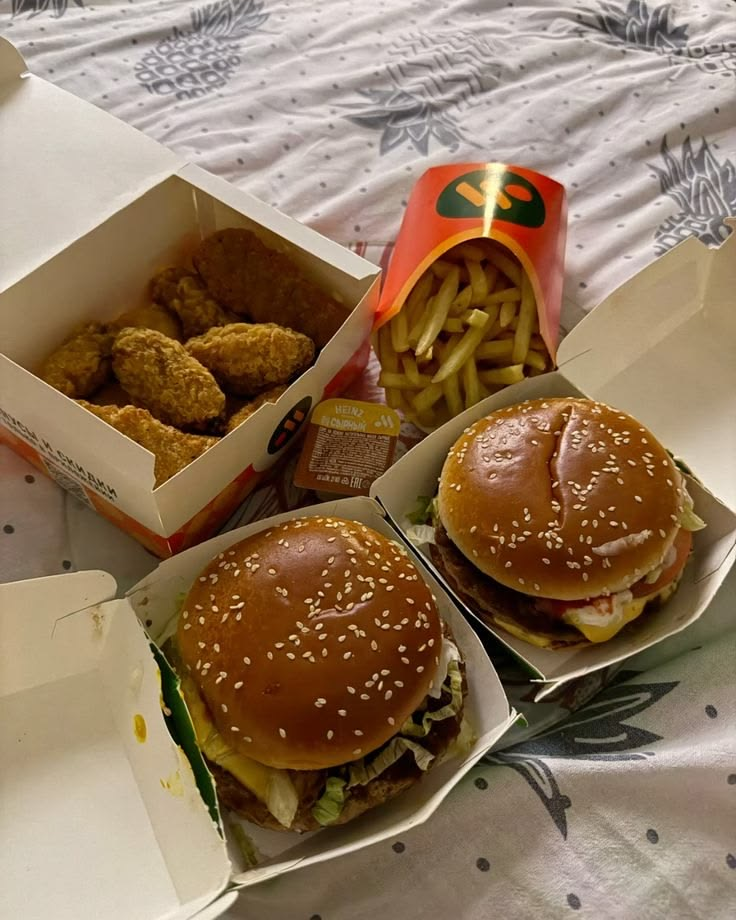

Explore by Category

Filipino Cuisine

Japanese Cuisine

American Cuisine

Korean Cuisine

Chinese Cuisine

Italian Cuisine



FoodFinder is a restaurant locator website designed to help you discover the best restaurants, and dishes near you. Search by category, filter by cuisine, and find detailed information including location and images of your favorite restaurants.
Whether you're looking for local favorites, international cuisines, or hidden gems, FoodFinder provides an easy and interactive way to explore dining options in your city.
Search Foods Nearby - Users can search for restaurants near their location
Explore by Category - Browse restaurants by cuisine categories.
Discover restaurants with location details.
Explore popular and recommended restaurants easily.
User-Friendly Design - Simple and easy to navigate the interface
UI Designer / Frontend
acera.nino@gmail.comBackend Developer
brba.open.coc@phinmaed.comResearch & Data
Joma.Halandumon.coc@phinmaed.comDocumentation
jomadyane@email.com